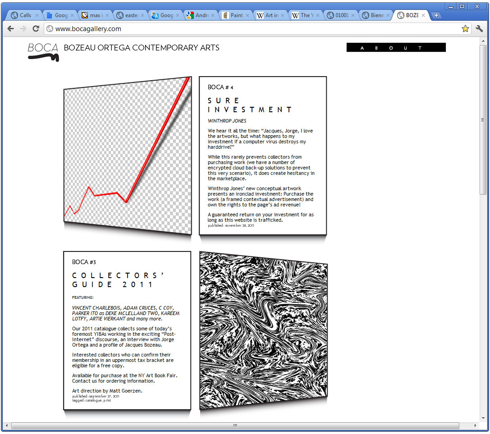
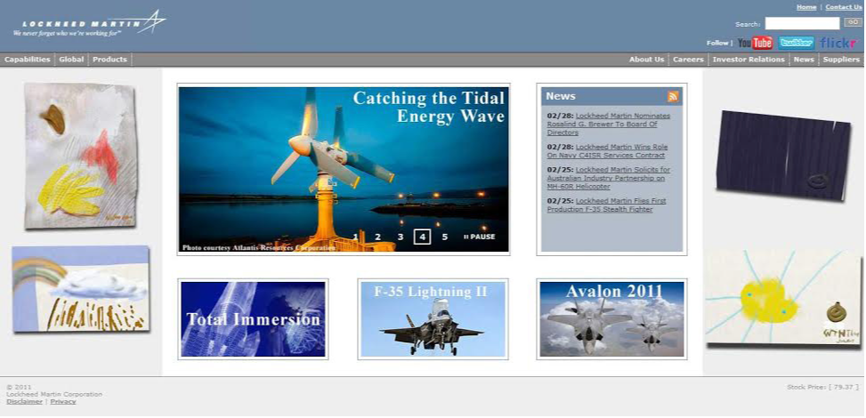
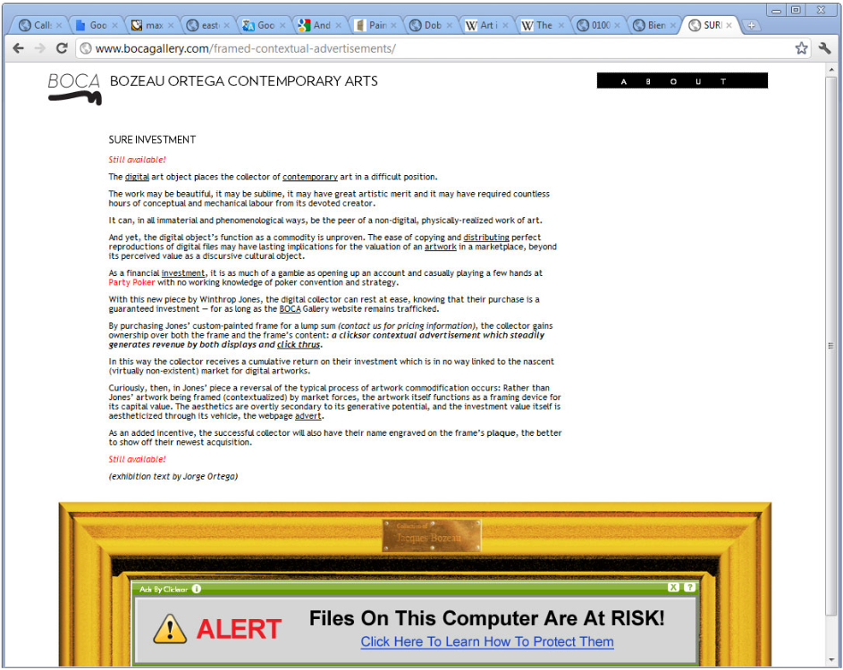

In 2010 I gathered some friends together to establish an online gallery: Bozeau Ortega Contemporary Arts (BOCA Gallery).
Functioning in the conceptual lineage of “institutional critique” and also drawing on a burgeoning interest in anonymous and pseudonymous cultural production, BOCA Gallery positioned itself as the first commercial art gallery devoted specifically to the exhibition and commodification of digital art. Working with my friend Julian Garcia, we invented two fictional gallery owners: Jacques Bozeau and Jorge Ortega. We created biographies and social media profiles, fleshing these figures out as sockpuppets—ostensibly wealthy and successful art dealers. We positioned these figures as innovative and visionary: they argued that corporate websites should display artworks the same way corporate lobbies do; reassured customers that all purchases would be 1/1 unique copies, with the exception of a single back-up held in proprietary, encrypted storage; and argued in international art english that digital painting marked a continuation of Clement Greenberg-style modernist dialectic, offering "a new horizon line."
BOCA exhibited work from many leading figures in the post-internet art movement, and, with the support of technically innovative designers and artists including David Ertel and Tyson Parks, pioneered display techniques that were later adopted by actual, non-ironic digital commodity dealers.
My favorite exhibition, by a fictional artist named Winthrop Jones, commodified a frame for a banner advertisement (see screenshot below). By purchasing the frame, the collector of the work would ostensibly gain ownership of all future income from the banner ad—yoking their investment to the broader success of BOCA Gallery. The description of the artwork was in part written by a contextual advertising firm, seemingly convinced that BOCA was a legitimate and esteemed gallery, and keen to incorporate an ad for partypoker.com into the exhibition text. The income from this contextual ad marked the apotheosis of BOCA’s revenue—a neat 600.00 CAD sale, which almost covered hosting and printing costs for the entire project.
Ultimately, the brand/concept of "BOCA Gallery" itself received a commodity valuation; In 2013 we allowed our possession of the bocagallery.com domain name to lapse, and a domain squatter promptly bought up the URL and put it to market for 64,000 USD.
Some examples:

BOCA Gallery Website, screenshot, 2011
Typical "install shot" image as produced for the 2011 BOCA collector's guide. This one features digital pieces by Kareem Lotfy (left) and myself (right), 2011

Suggested method for displaying collected artwork on corporate websites. Here the Lockheed Martin website features the scatologically-themed digital paintings of Winthrop Jones, 2011

"Sure Investment" by Winthrop Jones, screenshot, 2011
BOCA Gallery fair booth promotional video, by Jason Harvey, 2011
Name Last modified Size Description
Parent Directory 28-May-2025 12:17 -
Early Work (2006-2009) 28-May-2025 14:30 963k artworks